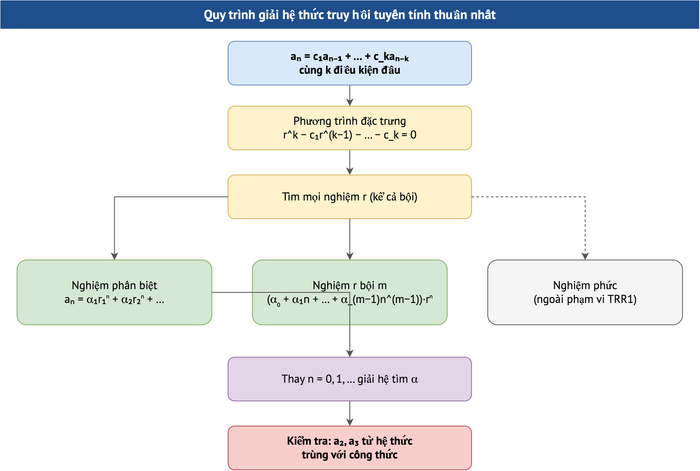

Module 8. Giải hệ thức truy hồi
Phương trình đặc trưng, nghiệm phân biệt, nghiệm kép, bậc 3
Môn: Toán rời rạc 1 (INT1358)Giáo trình 2016 §2.4.2 · Đề cương INT1358 mục 2.4.3 · Rosen §8.2Đề thi: Câu 2b (đề 2017–2020), câu 3a (đề 2023–2024)Thời lượng gợi ý: ≈ 3 giờ141 câu trắc nghiệm (141 câu gốc) · 11 bài tự luận (3 gốc)
- Lập phương trình đặc trưng đúng dấu
- Chọn dạng nghiệm cho nghiệm phân biệt và nghiệm bội
- Giải hệ tìm hệ số và kiểm tra bằng số hạng đầu
- Nhận ra lỗi chép trong tài liệu (r² − 6r − 9)
Bài giảng dạng slide
Dùng phím ← → hoặc các nút; bấm “Toàn màn hình” để trình chiếu. Mỗi slide có khung “Giải thích cho người mới bắt đầu”.
Sơ đồ minh họa

1. Nội dung chi tiết
Nếu r là nghiệm của r² = c₁r + c₂ thì aₙ = rⁿ thỏa aₙ = c₁aₙ₋₁ + c₂aₙ₋₂ vì c₁rⁿ⁻¹ + c₂rⁿ⁻² = rⁿ⁻²(c₁r + c₂) = rⁿ. Tổ hợp tuyến tính của nghiệm cũng là nghiệm; với hai nghiệm phân biệt, hai điều kiện đầu xác định α, β duy nhất (định thức Vandermonde khác 0).
2. Ví dụ chi tiết có lời giải
aₙ = aₙ₋₁ + 2aₙ₋₂, a₀ = 2, a₁ = 7: r = 2, −1; α + β = 2, 2α − β = 7 ⇒ α = 3, β = −1: aₙ = 3·2ⁿ − (−1)ⁿ.
aₙ = 6aₙ₋₁ − 9aₙ₋₂, a₀ = 1, a₁ = 6: r = 3 kép; α = 1, 3(1 + β) = 6 ⇒ β = 1: aₙ = (1 + n)3ⁿ.
aₙ = 5aₙ₋₁ − 6aₙ₋₂, a₀ = 3, a₁ = 8: r = 2, 3; α + β = 3, 2α + 3β = 8 ⇒ β = 2, α = 1: aₙ = 2ⁿ + 2·3ⁿ. Kiểm tra a₂ = 40 − 18 = 22 và 4 + 18 = 22 ✓.
aₙ = aₙ₋₁ + 2n + 3, a₀ = 4: aₙ = 4 + n(n+1) + 3n = n² + 4n + 4 = (n + 2)².
(b) aₙ = 7aₙ₋₁ − 6aₙ₋₂, a₀ = 2, a₁ = 1: r = 1, 6: aₙ = 11/5 − (1/5)6ⁿ. (d) aₙ = 2aₙ₋₁ − aₙ₋₂, a₀ = 4, a₁ = 1: (r − 1)² = 0: aₙ = 4 − 3n.
3. Thực hành tương tác
Nhập hệ số và điều kiện đầu, công cụ giải và đối chiếu 12 số hạng:
4. Bối cảnh lý thuyết và lịch sử
5. Case study
Độ phức tạp T(n) = T(n−1) + T(n−2) + 1 của Fibonacci đệ quy có nghiệm cỡ φⁿ ≈ 1,618ⁿ: với n = 50 cần cỡ 10¹⁰ lời gọi, còn phương pháp lặp chỉ 50 phép cộng.
6. Bẫy khi làm bài
• Ghi tường minh nghiệm kép có nhân tử n.
• Thay lại điều kiện đầu và a₂ để kiểm chứng.
Tự kiểm tra nhanh (10 câu, đổi bộ được)
Mỗi lần rút 10 câu từ kho của module. Bấm đáp án để chấm ngay; mọi câu đều có giải thích; có nút làm lại từng câu, đổi bộ câu hỏi, và kết quả được ghi vào Sổ lỗi & ôn tập.